Overview
The R package bnplasso (developer’s version) implements the Nonparametric Bayesian Lasso as described in Marin et al. (2025+).
The main routine of the package, bnplasso.lm(), returns an object of S3 class, "lmBayes", which is supported by various methods such as print(), summary(), plot(), fitted(), residuals(), coef(), and predict(), allowing users to quickly visualize, evaluate, and analyze the output in a familiar fashion. The function bnplasso.lm() can also implement the Bayesian Lasso (Park and Casella, 2008) and the Bayesian adaptive Lasso (Leng et al., 2014).
Installation
You can install the latest developer’s version via devtools as:
# install.packages("devtools")
devtools::install_github("marinsantiago/bnplasso")If you would like to reproduce the results from Marin et al. (2025+), you should install the version of the package employed at that time (bnplasso 0.1.0). That can easily be done by running in R:
devtools::install_github("marinsantiago/bnplasso@3c87169")Alternatively, you can also install the package (bnplasso 0.1.0) from the bnplasso folder in the supplementary materials to Marin et al. (2025+):
In R, set your working directory to the folder
bnplasso.Run the following R code:
A detailed changelog is available here.
Usage
First, let’s start by loading some packages that are not required by bnplasso but are necessary for this illustrative example.
Next, let’s generate some synthetic predictors.
p <- 200
rho <- 0.7
n.train <- 250
n.test <- 2000
set.seed(1)
Sigma.x <- rho^abs(matrix(1:p - 1, p, p, byrow = TRUE) - (1:p - 1))
X.train <- rmvnorm(n.train, rep(0, p), Sigma.x)
X.test <- rmvnorm(n.test, rep(0, p), Sigma.x)Here, our training set is of size 250 (n.train), while our held-out set is of size 2000 (n.test). The covariate space has 200 dimensions (p), and each covariate vector is drawn from a multivariate normal distribution with mean zero and an AR(1) covariance matrix, where the correlation parameter is 0.7 (rho).
Now, we will generate the model parameters.
Here, the intercept term is equal to ten (mu), the residual standard deviation is one (sigma), and the vector of regression coefficients is generated in a way so that only 10% of its entries are nonzero (beta).
Finally, let’s generate the responses.
set.seed(1)
y.train <- as.vector(mu + X.train %*% beta + rnorm(n.train, 0, sigma))
y.test <- as.vector(mu + X.test %*% beta + rnorm(n.test, 0, sigma))We can then easily apply the nonparametric Bayesian Lasso (Marin et al., 2025+) to these data through the function bnplasso.lm().
set.seed(1)
out.bnp <- bnplasso::bnplasso.lm(X.train, y.train)Note that we are only supplying the design matrix and the response vector. If some user-supplied hyperparameters are not provided, the bnplasso.lm() function will attempt to automatically determine appropriate values for those hyperparameters. That being said, different applications may require different and more tailored prior specifications.
The method summary() provides information about the model fit.
summary(out.bnp)LINEAR REGRESSION MODEL
NONPARAMETRIC BAYESIAN LASSO
Call details:
a = 0.1
b = 4e-05
alpha = 0.4014365
n.obs = 250
n.preds = 200
n.draws = 5000 (after burn-in and thinning)
elapsed = 10.58291 secs
Coefficients:
mean sd 2.5% 25% 50% 75% 97.5% n_eff
Intercept 10.020 0.064 9.894 9.976 10.020 10.064 10.147 3802.6851
beta_1 4.931 0.086 4.767 4.873 4.929 4.990 5.103 5000.0000
beta_2 5.114 0.108 4.897 5.042 5.112 5.188 5.323 5000.0000
beta_3 5.003 0.111 4.790 4.928 5.004 5.077 5.216 3759.5150
beta_4 5.114 0.107 4.904 5.041 5.115 5.185 5.325 4162.1842
beta_5 4.737 0.107 4.525 4.665 4.738 4.809 4.944 5000.0000
⋮It includes details about the function call, as well as the posterior mean, posterior standard deviation, various posterior quantiles, and the MCMC effective sample size for each of the model parameters.
The method plot() produces various model diagnostics plots, including posterior predictive checks and residual diagnostics.
plot(out.bnp)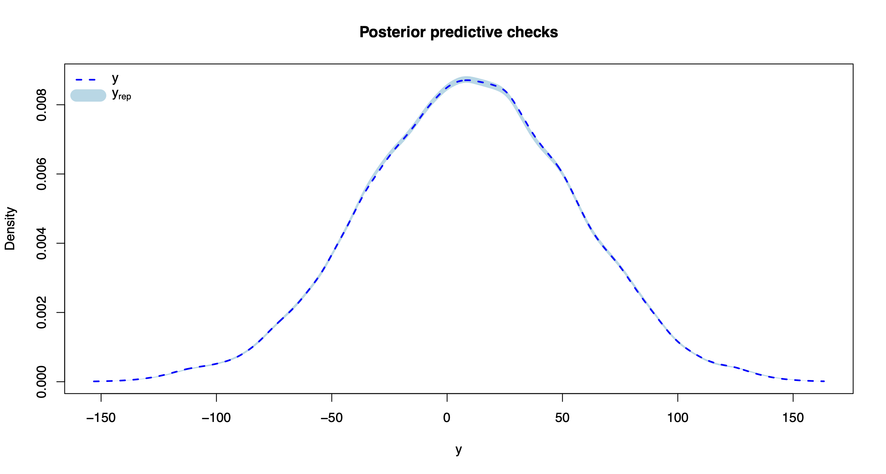
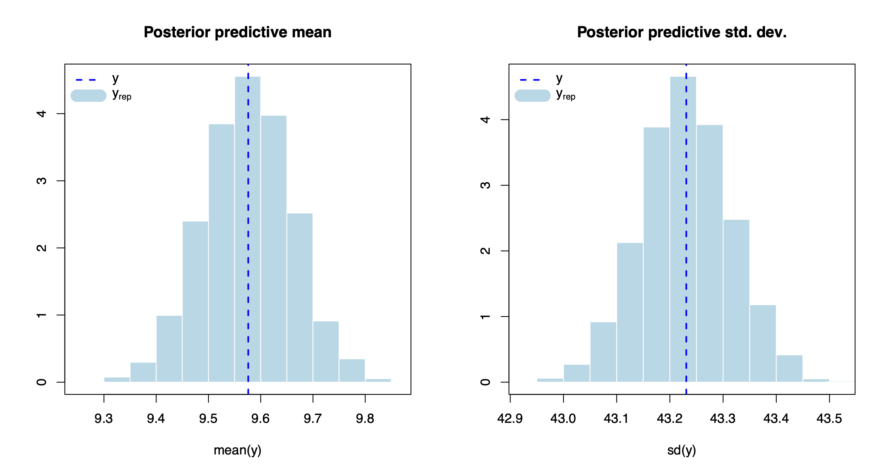
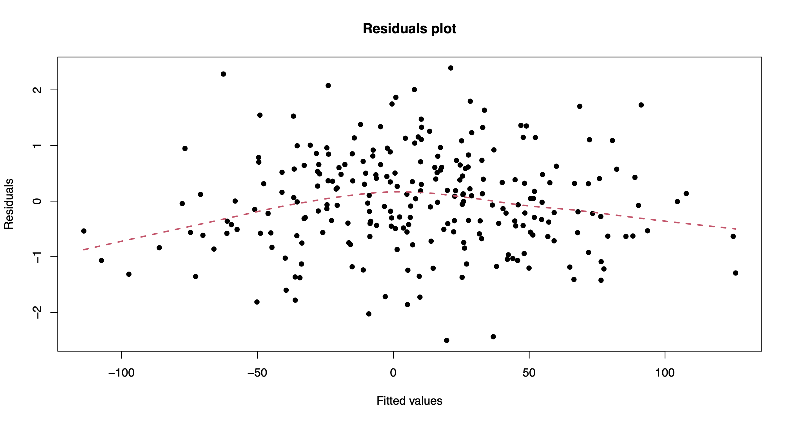
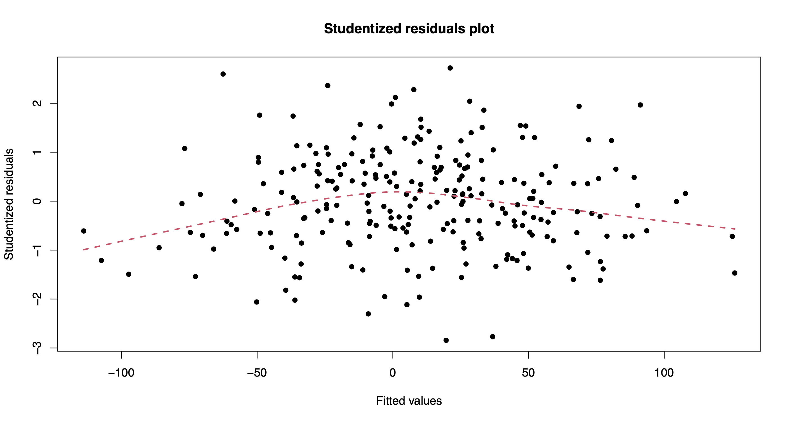
One can also extract the individual chains containing posterior draws from each of the model parameters. For instance, let’s extract and plot the chains for the intercept, beta_1, and beta_200.
plot(out.bnp$post.mu, type = "l", ylab = "", main = "mu")
plot(out.bnp$post.beta[,1], type = "l", ylab = "", main = "beta_1")
plot(out.bnp$post.beta[,200], type = "l", ylab = "", main = "beta_200")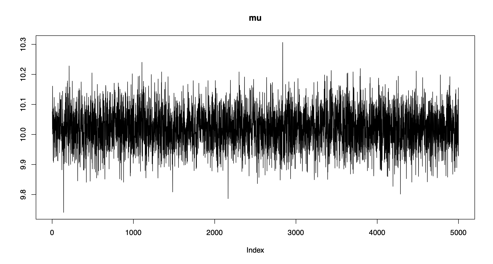
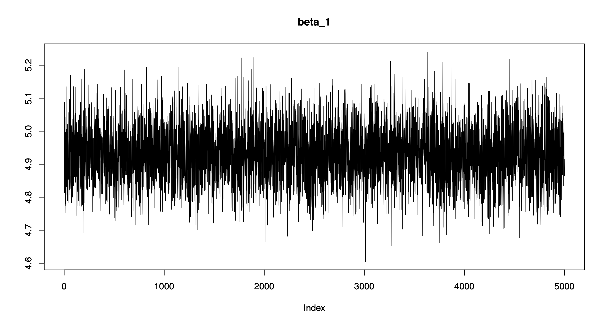
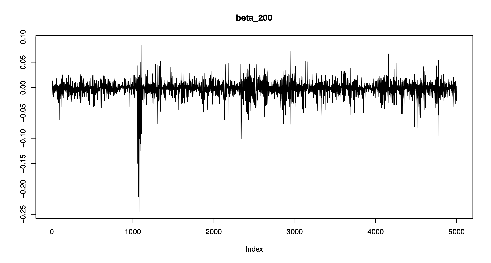
Note that the chains are centered around the true parameter values and exhibit good mixing!
Other useful class-specific methods include:
We can also visualize the posterior co-clustering probabilities, i.e., the posterior probabilities that two regression coefficients will be clustered together.
bnplasso::coclust.probs(out.bnp$post.clust_idx)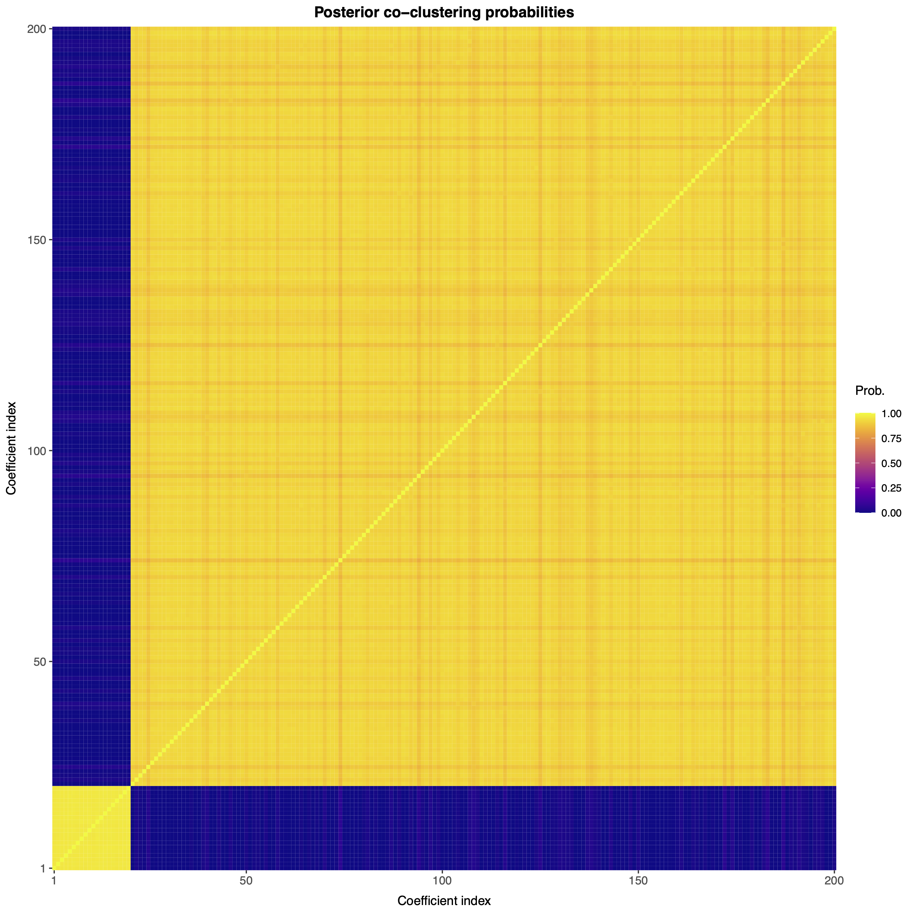
Note that the first 20 regression coefficients (which are nonzero) are clustered together with large probability, while the remaining 180 (which are zero) are also clustered together with large probability. As such, the nonparametric Bayesian Lasso is accurately performing variable selection.
If desired, one can also obtain a point estimate of the partition of the regression coefficients.
part <- bnplasso::get.partition(out.bnp$post.clust_idx)By default, the function get.partition() employs the variation of information loss function from Wade and Ghahramani (2018); however, users can also employ the Binder loss function. One can visualize this partition with the function coclust.point().
bnplasso::coclust.point(part)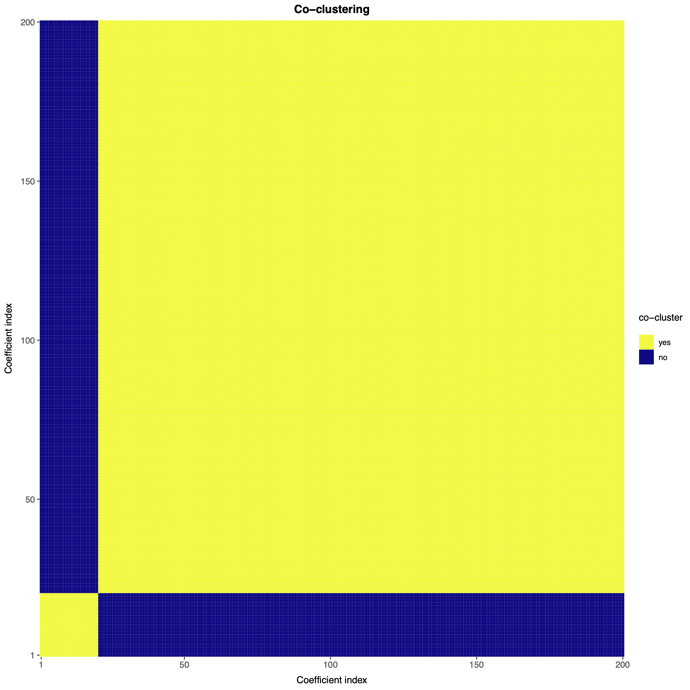
It is also possible to perform out-of-sample predictions using the method predict().
pprd <- predict(out.bnp, X.test)
dim(pprd)5000 2000The result is a matrix of size n.draws-by-n.test, where each column contains posterior predictive draws from each one of the points we wish to predict.
plot(density(pprd[,1]), lwd = 3, xlab = "", ylab = "", "y_test.1")
abline(v = y.test[1], col = 2, lwd = 3, lty = 2)
legend("topright", c("Predicted", "Actual"), lwd = 3, col = 1:2, lty = 1:2)
plot(density(pprd[,2000]), lwd = 3, xlab = "", ylab = "", "y_test.2000")
abline(v = y.test[2000], col = 2, lwd = 3, lty = 2)
legend("topright", c("Predicted", "Actual"), lwd = 3, col = 1:2, lty = 1:2)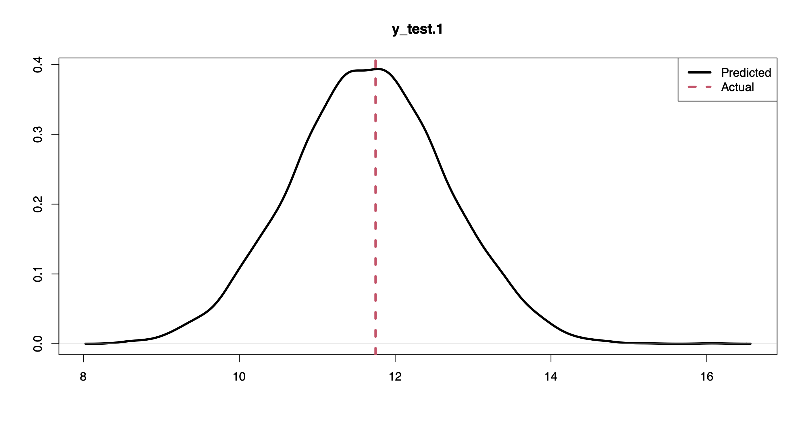
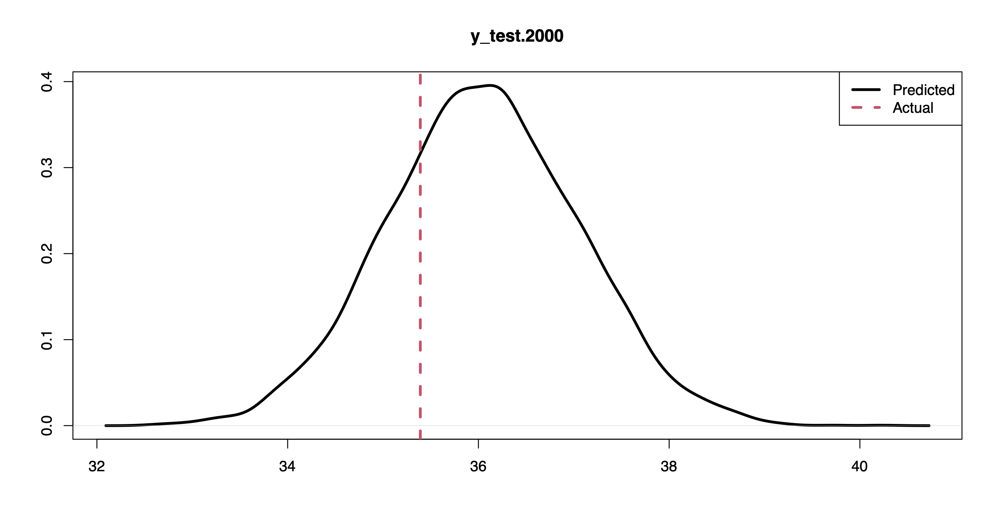
For instance, the plots above show the posterior predictive distribution along with the actual response values for the first and last points in the held-out set.
Given a held-out set, one can evaluate the out-of-sample predictive performance of the model using the expected log point-wise predictive density (elppd) through the function elppd().
bnplasso::elppd(out.bnp, X.test, y.test)-1.502845If a held-out set is not available, one can estimate the model fit using the functions psis.loo() and widely.aic(), which compute the Pareto-smoothed importance sampling leave-one-out information criterion (PSIS-LOO) and the Watanabe–Akaike information criterion (WAIC), as in Vehtari et al. (2017).
bnplasso::psis.loo(out.bnp)
bnplasso::widely.aic(out.bnp)713.9746
712.7612Additional guidelines and help pages for using the package functions are available here.
Source code and data to reproduce the results from Marin et al. (2025+) are available at https://github.com/marinsantiago/bnplasso-examples.
Disclaimer
The software is provided “as is,” without warranty of any kind, express or implied, including but not limited to the warranties of merchantability, fitness for a particular purpose and noninfringement. In no event shall the authors or copyright holders be liable for any claim, damages, or other liability, whether in an action of contract, tort or otherwise, arising from, out of, or in connection with the software or the use or other dealings in the software.
References
Leng, C., Tran, M.-N., and Nott, D. (2014). “Bayesian Adaptive Lasso.” Annals of the Institute of Statistical Mathematics, 66, 221–244
Marin, S., Loong, B., and Westveld, A. H. (2025+), “Adaptive Shrinkage with a Nonparametric Bayesian Lasso.” Journal of Computational and Graphical Statistics. doi:10.1080/10618600.2025.2572327
Park, T. and Casella, G. (2008). “The Bayesian Lasso.” Journal of the American Statistical Association, 103 (482), 681–686.
Vehtari, A., Gelman, A., and Gabry, J. (2017). “Practical Bayesian model evaluation using leave-one-out cross-validation and WAIC.” Statistics and Computing 27 1413–1432.
Wade, S. and Ghahramani, Z. (2008). “Bayesian cluster analysis: Point estimation and credible balls (with discussion).” Bayesian Analysis, 13 (2), 559–626.